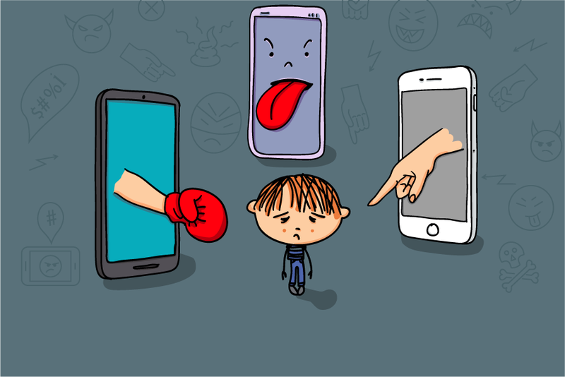

Кібербулінг

Кібербулінг - це форма булінгу, яка відбувається в онлайн-середовищі. Це може бути домагання, образи, погрози, розповсюдження неправдивої інформації або інші форми цифрової агресії. Кібербулінг може мати серйозні наслідки для жертви, такі як погіршення самопочуття, депресія, тривожність, а в деяких випадках - навіть самогубство.
Основними формами кібербулінгу є:
1. Постійні образи та погрози: Жертвам кібербулінгу можуть надсилати образливі повідомлення або коментарі на соціальних мережах, форумах, чат-комнатах або електронній пошті. Це може призвести до зниження самооцінки та почуття безпорадності.
2. Розповсюдження неправдивої інформації: Це може включати поширення неправдивих чуток або фотографій, що можуть завдати шкоди репутації жертви.
3. Домагання: Це може включати надсилання непристойних повідомлень або фотографій, запити на зустрічі або інші форми сексуального домагання.
4. Використання соціальних мереж для виключення з групи: Це може включати виключення жертви з групи чи колективу, публікацію фотографій без дозволу чи інші форми соціальної ізоляції.
Щоб запобігти кібербулінгу, необхідно:
1. Бути обережним при розміщенні особистої інформації в Інтернеті: Не слід розміщувати особисту інформацію, таку як номер телефону, адресу електронної пошти чи домашню адресу, на веб-сайтах або соціальних мережах.
2. Не давати можливості кібербулінгу: Не слід надавати можливості кібербулінгу, такі як коментарі на соціальних мережах або форумах. Якщо ви бачите, що хтось інший стає жертвою кібербулінгу, то необхідно повідомити про це відповідні органи.
3. Зберігати докази: Якщо ви стали жертвою кібербулінгу, то необхідно зберегти всі докази, такі як електронні повідомлення, фотографії або відео. Це може допомогти вам у разі подання скарги до відповідних органів.
4. Повідомляти про кібербулінг: Якщо ви стали жертвою кібербулінгу, то необхідно повідомити про це своїх батьків або відповідні органи. Важливо вчасно реагувати на кібербулінг, щоб запобігти подальшим наслідкам.
Кібербулінг - це серйозна проблема, яка може мати серйозні наслідки для жертви. Важливо бути свідомим про ризики та приймати необхідні заходи для запобігання кібербулінгу.